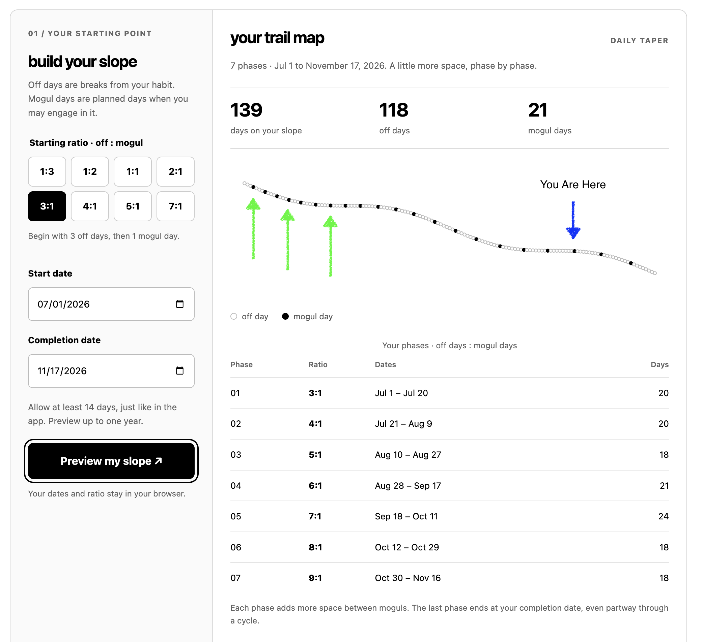

There's one thing that nearly all sobriety or recovery apps have in common: They treat "relapses" or "slip-ups" as failures. Treating these events as failures triggers shame and anxiety, subconsciously if not consciously. Picture this. You've just reached 100 days of sobriety from marijuana. You're over the moon with pride in yourself, you're telling your close friends, maybe some of your family depending on your relationship with them. A week later maybe you receive some terrible news, or you get into a bad fight with a loved one or significant other. Something happens that puts you in a dark place and you cope with it in the most comfortable way you know how. You break that ~100 day sobriety streak, and while you feel better for a few moments, the shame you feel afterward when you reset your streak is almost as bad as what you felt before.
Now let's look at the same situation a different way. Instead of a 100 day streak of abstaining completely, you have been slowly reducing your usage over time. Each one of those black dots represents another day you have been allowed to use marijuana. You've gone from once every 3 days to once every week. You've successfully rewired your brain to some degree, and you're craving it much less frequently. That day where you receive some unfortunate news comes, and you cope with it by using marijuana. One slip-up does not erase the last 100 days of progress. You have no reason to feel shame. Your completion date moves back by a couple days, and that's the whole cost. You just pick yourself up and get back on the trail. Instead of starting from zero you've trained your brain to go longer and longer periods without using, so when you get back to working on your sobriety you're used to what it feels like to take 4, 5, and 6 days off. In a traditional cold turkey approach, your brain now needs to remember what it's like to go even one day without it after using. It's been 100 days since the last time you needed to take that first step.
{kind=link}

This isn't to say tapering is always the right choice. For some substances, reducing without medical supervision isn't safe, and I've written about where that line is in Tapering Vs Cold-Turkey. However, everybody is different. For one person, cold turkey may be the best approach. For others, a gradual reduction is the best. A big factor in whether one approach or another is better for you is how you cope with anxiety. If you've ever done a guided meditation, you've heard something along the lines of "observe your thoughts without judgment." If you've found this approach helpful in managing your anxiety, you may find the tapering approach effective as well. Instead of observing your thoughts without judgment, you're observing your actions without judgment. You're not blaming or shaming yourself for a slip-up, you're acknowledging it happened and moving on towards your goal.
Create your own tapering Slope on our calculator. If this type of approach sounds like something you'd like to try, Slope is free on the iOS App Store. For any questions, send an email to hello@getslope.app.